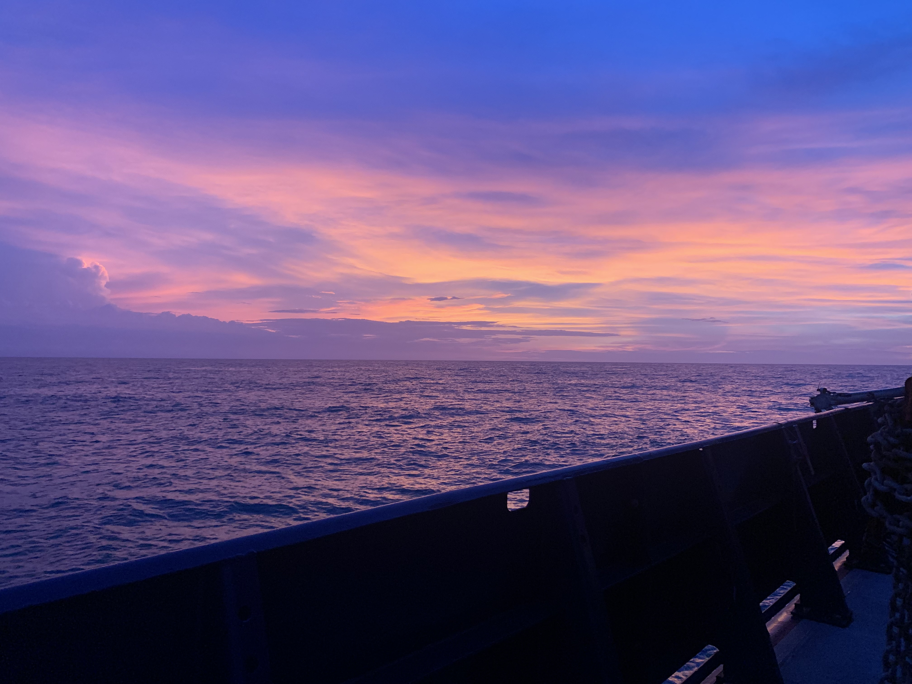

12 Cruises

The Décima lab is a sea-going lab, meaning a lot of our samples are collected for going out on oceanogrpahic research vessels.
13 Lab Expectations – At-Sea Operations
13.1 1. Professional Conduct on a Research Vessel
The research vessel is a shared, safety-critical workspace where professionalism, respect, and clear communication are essential. Fatigue and long hours do not excuse unsafe or disruptive behavior. Follow ship hierarchy and instructions from the Captain, officers, marine technicians, and science leadership.
Reality Check:
Fieldwork is demanding. Staying calm, communicative, and respectful keeps operations efficient and prevents avoidable conflict.
13.2 2. Safety Requirements
All personnel must attend required safety briefings and drills. Wear PPE where required (hard hats, PFDs, closed-toe shoes, eye protection). Do not enter restricted spaces without permission. Never work alone on deck at night or during adverse weather.
Reality Check:
Deck operations can become hazardous quickly. PPE and buddy systems reduce risk. When unsure, stop and ask for clarification.
13.3 3. Workload, Watch Schedules, and Communication
Arrive on time and prepared for your watch. Communicate proactively with your watch team and science leads. Report equipment failures, delays, or safety concerns immediately.
Reality Check:
Others rely on you to be present and responsive. Small communication lapses can disrupt operations or compromise safety.
13.4 4. Lab Space Etiquette
Clean workspaces as you go. Properly label all containers, samples, and reagents. Follow chemical handling protocols and secure all hazardous materials when not in use.
Reality Check:
Shared lab space is limited. Clean, organized benches prevent confusion and keep workflows running smoothly across watches.
13.5 5. Sample Handling and Data Integrity
Follow all relevant SOPs strictly. Record sample metadata immediately and accurately in both digital logs and physical notebooks. Verify sample labels before preservation or storage.
Reality Check:
Once a cast or experiment ends, missing metadata cannot be reconstructed. Real-time documentation preserves data quality.
13.6 6. Deck Work (CTD, Nets, Pumps, Optical Gear)
Follow instructions from marine technicians and deck officers. Stick to assigned roles during deployments. Stay alert for tensioned lines, moving gear, and heavy equipment. Respect operational pauses or cancellations due to weather or safety concerns.
Reality Check:
Deck operations depend on coordination and attention. Avoid improvisation,when in doubt, defer to the deck crew or operation lead.
13.7 7. Experiments and Incubations
Monitor experiments at required intervals. Communicate before using shared incubators, filtration setups, or consumables. Label samples clearly to avoid confusion across watches.
Reality Check:
Multiple experiments often run simultaneously. Clear labeling and consistent monitoring prevent mix-ups and timing errors.
13.8 8. Data Management
13.9 9. Community Standards and Living Together
13.10 10. Mental Health, Fatigue, and Sea-State Realities
13.11 11. End-of-Cruise Responsibilities
California Current Long Term Ecological Research Cruise